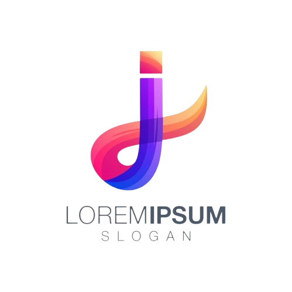

twiter
comunidade do Facebook
Grupo Discord
Grupo Whatsapp
comunidade:
a
Comunidade Lion
foi criada em 2022 com o objetivo de ajudar novos desenvolvedores que se interessaram pela area. contando atualmente com um total de 10.000 membros a mesma tende a crescer cada vez mais
criador:
Juan Lucas
18 anos
nativo de Catende-PE
Prestando o curso de ciencias da computação
retorne á pagina principal